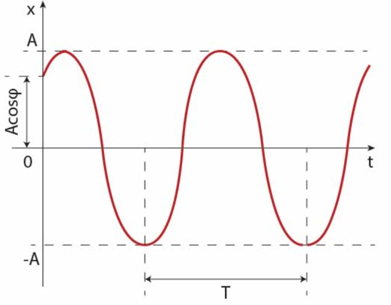

Symulacja
Masa ciężarka
Współczynnik sprężystości
Ruch harmoniczny to ruch drgający, w którym na ciało działa siła o wartości proporcjonalnej do wychylenia ciałą z jego położenia równowagi, skierowana zawsze w stronę punktu równowagi. Przykładem może być ciężarek zawieszony na sprężynie.
Ciało porusza się ruchem harmonicznym prostym, jeżeli działa na nie siła, skierowana w stronę położenia równowagi, o wartości proporcjonalnej do wychylenia ciała, co opisuje następujący wzór (przy założeniu, że ruch układu odbywa się w jednym wymiarze):
F = -kx
gdzie:
Okres drgań harmonicznych to czas, jaki jest potrzebny do zakończenia jednego pełnego cykly drgania harmonicznego. Jest on dany wzorem:
T = 2π/ω
Wychylenie w ruchu harmonicznym zmienia się zgodnie z regułą:
x(t) = Acos(ωt+φ)
gdzie:
Wykres zależności wychylenia od czasu w ruchu harmonicznym został zaprezentowany poniżej.
Rys.1. Wykres położenia ciała x w funkcji czasu t.
Wzory na prędkość oraz przyspieszenie ciała w ruchu harmonicznym można wyznaczyć na podstawie kolejno pierwszej i drugiej pochodnej przemieszczenia względem czasu:
v(t) = dx/dt = d/dt * (Acos(ωt+φ)) = -Aωsin(ωt+φ) = -vmaxsin(ωt+φ)
a(t) = dv/dt = d/dt * (-Aωsin(ωt+φ)) = -Aω²cos(ωt+φ) = -amaxcos(ωt+φ)
Ze względu na dziedzinę funkcji sinus [-1,1], prędkość maksymalna jest iloczynem amplitudy i częstości kołowej (vmax=Aω). Występuje ona w momencie przejścia ciała przez położenie równowagi x=0. Natomiast maksymalne przyspieszenie ciało osiąga w punkcie wychylenia x=-A i wynosi amax=Aω².
Poniżej przedstawiona została symulacja ruchu harmonicznego na przykładzie klocka zawieszonego na sprężynie. Możliwa jest zmiana jego masy oraz współczynnika sprężystości.
Masa ciężarka
Współczynnik sprężystości
Na poniższym filmie połączono symulację omawianego ruchu z wykresami zależności przemieszczenia, prędkości oraz przyspieszenia od czasu.